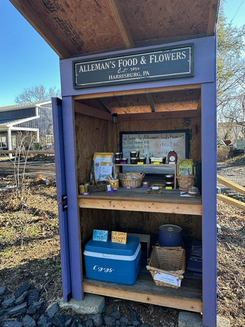

Raw local honey, bee removal, nucs & queens.
Family-run apiary in Harrisburg, PA. 10+ years of beekeeping in Central Pennsylvania. We produce raw local honey from our hives, sell locally raised nucleus colonies and Pennsylvania-bred queens each spring, perform live honey bee removal and free swarm collection throughout the Harrisburg area, and offer beekeeping mentorship for new and developing beekeepers. Bees relocated, never exterminated.
When we're available
Phone & text — 7 days a week
Texts get the fastest response, especially during swarm season. 717-379-3248
Honey stand — dawn to dusk
Self-serve at 3502 High St., Harrisburg, PA 17109. Closed during snow and rain. No standard hours.
Bee removals & site visits
By appointment, typically same-week. During swarm season (April–July) we prioritize same-day or next-day on active swarms.
Nuc & queen pickup
By appointment during spring season — coordinate via phone or text.
What brought you here?
I want raw local honey
Raw, unfiltered honey from our hives — spring wildflower, summer, fall, cut comb, and chunk honey. Plus small-batch handcrafted products made from our own beeswax and propolis. Self-serve at our honey stand or call to arrange pickup.
Honey varieties →I see a swarm of bees in my yard
Free swarm collection across Central PA. Don't spray it, don't wait — call right away. Swarms collected at no charge. Same-day response when bees are active.
Swarm collection →I have bees in my house, wall, or chimney
Live honey bee colony removal from walls, soffits, chimneys, trees, and structures. Bees vacuumed alive, comb saved when possible, entry points sealed. Bees go to one of our managed apiaries. Free on-site estimates.
Bee removal →I want to buy bees or queens
5-frame nucleus colonies and locally raised Pennsylvania queens for spring pickup. Northern-bred, overwintered, survivor genetics. Reservations open in fall with a 50% deposit. Limited quantities each year — reserve early.
Nucs & queens →I want to learn beekeeping
Beekeeping mentorship for new and developing beekeepers in Central PA. Hands-on hive inspections, varroa management, seasonal protocols, ongoing support. Plus apiary consulting for established beekeepers who want a second set of eyes.
Apiary services →I have a farm or orchard that needs pollination
Honey bee pollination services for orchards, farms, and growing operations throughout Central PA — apples, cherries, blueberries, peaches, cucurbits, and other pollinator-dependent crops. Limited contracts each season.
Pollination →Family-run beekeeping — with one unusual twist
We're a family-run beekeeping operation in Central Pennsylvania with 10+ years of working bees. We manage hives across multiple apiary sites in the Harrisburg area, produce raw local honey for sale at our honey stand and through partner locations, raise nucs and queens each spring, and respond to bee removal calls throughout the region.
We're also unusual in our market for one specific reason: we run a sister business, Lawns Plants & Pests LLC, a fully licensed Pennsylvania pest control and Nuisance Wildlife Control company. So when you call about a bee problem, we can identify what you actually have on the phone — and if it's not honey bees (yellow jackets, hornets, wasps), we have the licensing to solve it without sending you to a different company. One call, one phone number, all stinging insects handled the right way.
Three things that set us apart
Real Northern-bred genetics
Our breeding stock is raised, mated, and overwintered in Pennsylvania — not flown up from Georgia or California in March. Locally adapted queens survive PA winters because their genetics have been tested by them.
A working apiary, not a side project
10+ years in. Multiple apiary sites. Continuous queen rearing program. Bees relocated from local removals get integrated into our genetic base and contribute to the next generation of survivor stock.
Bees AND pest control under one phone number
No other apiary in Central PA also runs a fully licensed pest control company. We can identify, diagnose, and resolve any stinging insect issue — bees go to the apiary, yellow jackets to the pest control side. You don't have to figure out who to call.
Where we work
Bee removal, swarm collection, and apiary services throughout Dauphin, Cumberland, Lebanon, and York Counties — including Harrisburg, Paxtang, Penbrook, Steelton, Highspire, Middletown, Hummelstown, Hershey, Palmyra, Annville, Cleona, Lebanon, Grantville, Linglestown, Colonial Park, Susquehanna Township, Lower Paxton, Camp Hill, Mechanicsburg, Lemoyne, New Cumberland, Wormleysburg, Enola, Marysville, Halifax, Millersburg, Elizabethtown, Mount Joy, Mount Wolf, Manchester, Dillsburg, Carlisle, Boiling Springs, and surrounding Central Pennsylvania communities. Honey is available locally at our stand and through partner locations across Central PA.
Find us at the honey stand
3502 High St., Harrisburg, PA 17109
Self-serve. Open dawn to dusk. Stop by anytime to pick up raw local honey from our hives — plus small-batch handcrafted products made from our beeswax and propolis (lip balms, candles, salves, and other items that change throughout the year). When a batch sells out, the next one comes when we have time to make it. Cash, CashApp, and Venmo accepted on the honor system.

Frequently asked
What does "raw local honey" actually mean?
Raw means unheated and unfiltered — the honey is the same as what comes out of the hive, with all of its natural pollen, enzymes, and trace elements intact. Local means our bees forage within a few miles of where you're buying it, which means our honey reflects whatever's blooming in Central PA that season. Commercial supermarket honey is heat-processed, ultra-filtered, often blended with imports, and tastes the same all year. Real local honey doesn't.
Will you really come collect a swarm for free?
Yes. Healthy swarms are valuable to a working beekeeper — they're how apiaries grow. Accessible swarms (within reach of a step ladder) are typically collected at no charge across our service area. See Swarm Collection for details.
How is a beekeeper different from a pest control company for bee removal?
A pest control company's job is to make the bees go away. Our job is to make the bees go home with us. We use bee vacuums that collect bees alive, save the comb when possible, and add the colony to one of our managed apiaries. Pest control companies typically spray. We don't.
Do you ship nucs or queens?
No, pickup only at our apiary in Harrisburg, PA. Shipping bees adds stress and risk we'd rather not pass to our customers. See Nucs & Queens for the full details.
Do you offer beekeeping classes?
We offer beekeeping mentorship — hands-on hive inspections, varroa monitoring, equipment guidance, seasonal protocol training, and ongoing support — for new and developing beekeepers. Less classroom-style, more "let's open a hive together and walk through what's happening." See Apiary Services for what's available.
What if I have yellow jackets, hornets, or wasps instead of honey bees?
Send a photo to 717-379-3248 — we identify stinging insects every day. If you've got something other than honey bees, our sister company Lawns Plants & Pests LLC handles it. Same phone number, same fast response, licensed Pennsylvania pest control.
Real third-party verification
The Alleman Apiary is listed in the following directories and member organizations — verifiable through their public listings:
- Pennsylvania State Beekeepers Association (PSBA) — listed on the official Pennsylvania Honey Bee Supplier map
- Capital Area Beekeepers Association (CABA) — active member, listed swarm collector and East Shore club extractor contact
- Lawns Plants & Pests LLC sister business — Pennsylvania-licensed pesticide applicator (since 2005) and Pennsylvania-certified Nuisance Wildlife Control Operator
- PA Department of Agriculture — registered apiary with current annual inspection
- Local Honey Finder — listed Southcentral PA raw honey supplier
Real third-party verification, not marketing claims.
Bees, honey, or a question?
Call or text 717-379-3248. We try to respond same day. Send a photo if you've got bees somewhere unexpected — we identify for free.
Call or Text 717-379-3248